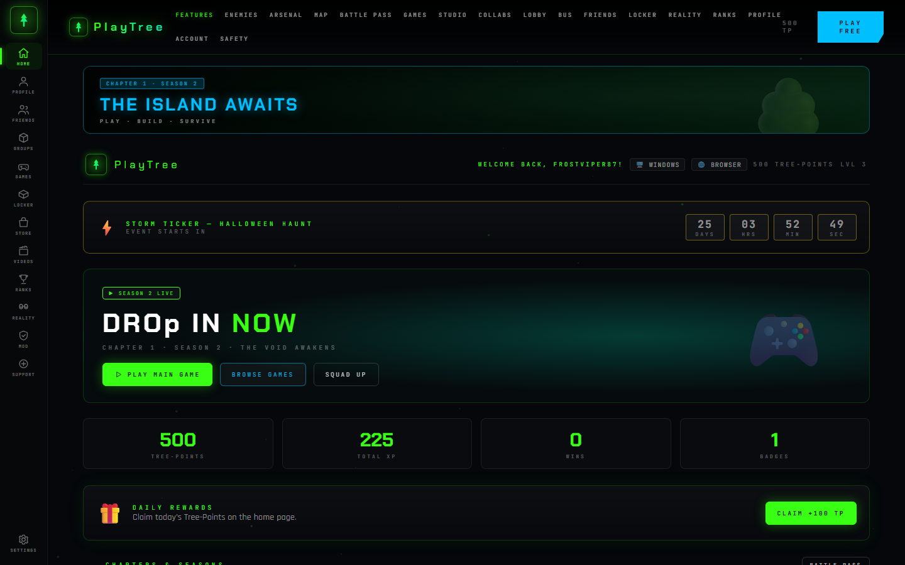
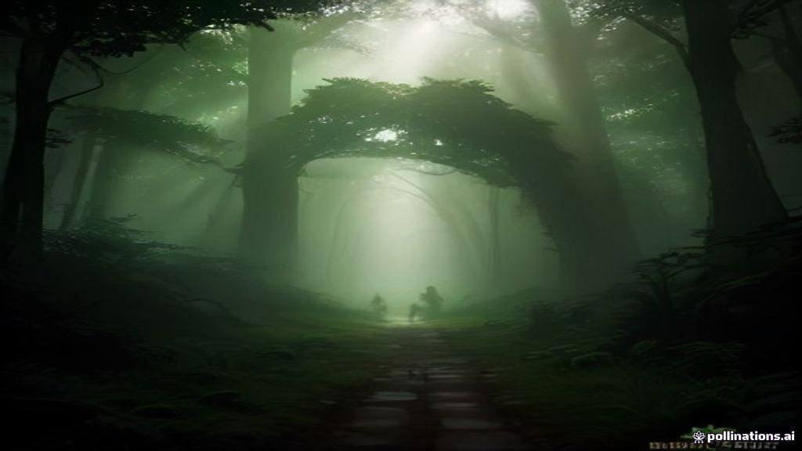
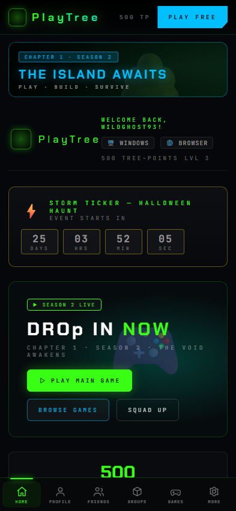
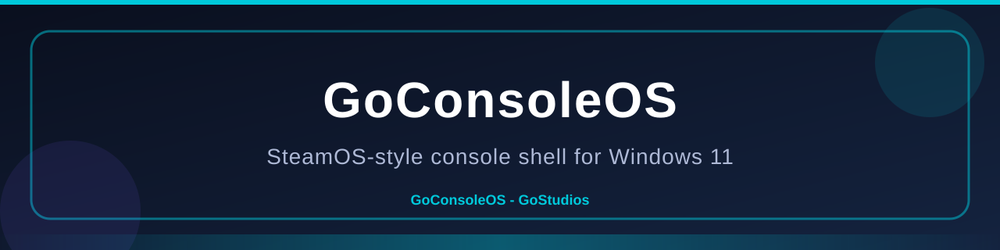
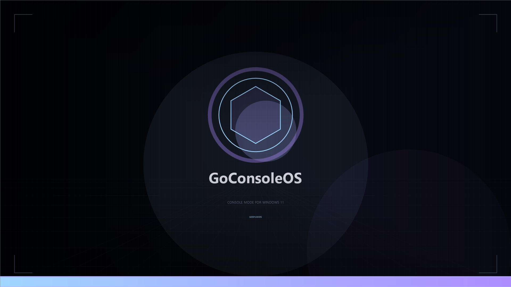
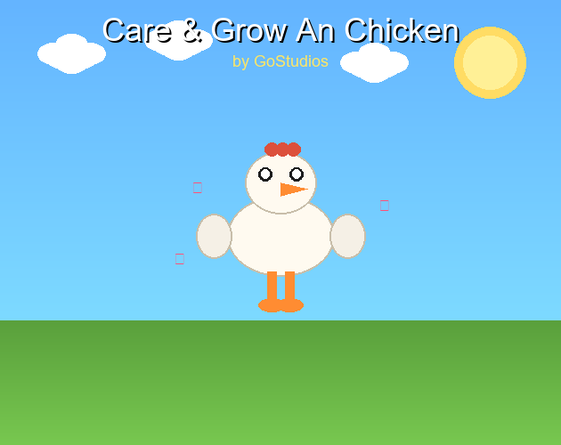
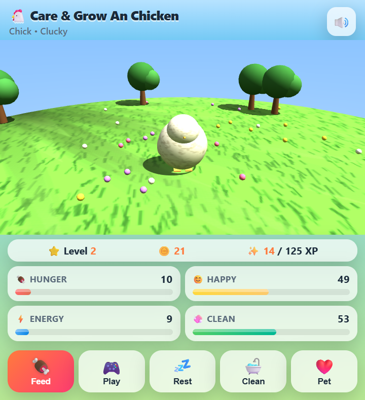
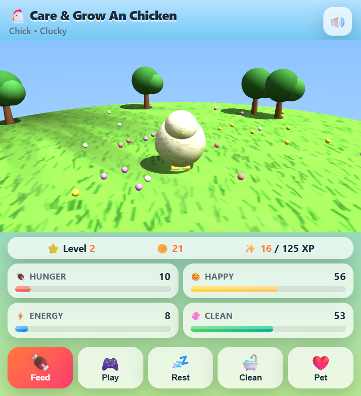
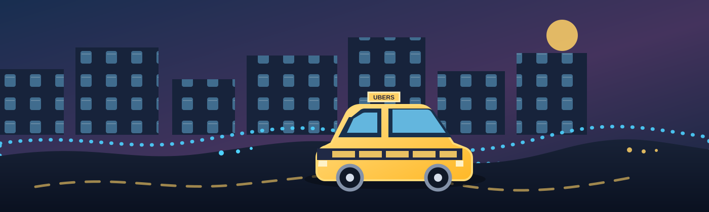

Forest Awakening
Root Titan
Independent studio · researched 8 Nov 2026
PlayTree. GoConsoleOS. A faster Windows 11. A chicken you raise from an egg. Roblox transit, a browser that became an OS, and more — collected from the public GoStudios-Real GitHub into one readable hub.
The short version
GoStudios-Real is the public home of an unusually broad indie line-up: a fantasy multiplayer game, a console-style operating layer for Windows, Linux and Android builds of the same idea, a reversible Windows 11 performance package, a 3D virtual-pet game, Roblox tooling, and an Electron desktop OS.
The through-line is portability and ownership: run from a USB stick, keep the host OS intact, make the same project work on desktop, mobile and TV, and publish the source where people can inspect it.
01 / flagship game
A stylised multiplayer fantasy adventure with 28 systems, a 9000×9000 world and an enemy called the Astro Toilet. Yes, really.

PlayTree Corporation · GoConsole Game Studios · GoStudios · 2026
Cleanse the corruption across four themed rounds. Build a base, tame and evolve pets, enchant gear, ride mounts, and take on elite “Astro Toilet” enemies that warp in from a mothership. It runs at 1280×720 / 60 FPS on Pygame SDL2 and ships on Windows plus GoConsoleOS.
Root Titan
Hydra
Sky Guardian
Hollow King
The interactive hub: gate/profile, game library, five canvas arcade engines, Studio level editor, locker and store, social pages, leaderboards and an offline PWA mode. One React codebase builds web, Android (Capacitor) and Windows (Electron).
Inspect PlayTree-App ↗Cover thumbnails and app icons for the PlayTree universe, including the Forest Runner cover and icon set used as reference art for the game library.


02 / platform
A controller-first, SteamOS-inspired console shell that runs from a USB drive and leaves Windows untouched. The line now spans Windows, Linux, Android, VR, web, a Windows theme and even a mail client.
v2.2.0 “Blue Rebrand” · C# / .NET 8
Boot into a fullscreen console shell, scan Steam, Epic, Xbox/Game Pass, GOG and custom EXEs into one library, switch Quiet/Balanced/Turbo performance modes, and summon an in-game overlay with the Guide button. Every console also hosts its own ACC account API and web dashboard on port 39210.


SteamOS-like Ubuntu/Debian build: KDE Plasma desktop mode, Steam Big Picture + Gamescope gaming mode, GameMode, MangoHud, PipeWire, Flatpak and Proton. Built for VirtualBox and PC hardware.
Linux repo ↗Five companion modules: a LAN USB gamepad, the Mobile hub (Portable USB, Link, USB Health, Cast), Account Portal, GoAI and a Wear OS watch companion. Each device can host its own ACC + GoAI server.
Android repo ↗Cardboard VR for Nokia G22/G21 and any Android device: stereoscopic OpenGL ES rendering, gyro + accelerometer head tracking, five built-in games, Bluetooth controller support and headset profiles.
VR repo ↗A pure Windows 11 personalisation pack: dark navy surfaces, cyan #00C9DB, HUD wallpaper, custom pointer, chimes and a Terminal profile. One-click apply/revert, no shell replacement.
A Compose Multiplatform Gmail/IMAP + SMTP client for Android 13/16, Android TV and Windows. App-password sign-in, folder browsing, compose/reply, and a built-in demo inbox that works offline.
Mail repo ↗The ACC portal — account, profile, devices, 2FA, GoPoints wallet, Game Pass subscriptions, gift cards, friends and activity. Runs from a console or as a static GitHub Pages mirror.
Live portal ↗03 / performance
Windows 11 Fast & Light is a free, reversible optimisation package delivered as one small signed update. Twelve changes, no system files deleted, no reboot required.
Community project by GoStudios. Not affiliated with or endorsed by Microsoft. Every change is a registry value or service start type and can be undone.
powershell -ExecutionPolicy Bypass -File "Windows11FastLight-Setup.ps1" -Silent
04 / games & experiences
A virtual pet, two PlayTree Studio showcase concepts, and a Roblox transit app with real human drivers.



GoStudios · Three.js + .NET MAUI · Web / Windows / Android
Raise a chicken from egg to adult through four evolution stages. Feed, play, rest, clean and pet it while keeping hunger, happiness, energy and cleanliness in balance. Two mini-games — Catch and Memory Match — earn coins for hats, accessories, toys and themes, with ten achievements to unlock.
An orbital sandbox concept for PlayTree Studio: forge a star, sculpt planets, add moons and rings, then watch a physics-lite orrery find its rhythm. A stability meter warns when orbits collide; a time scrubber lets you fast-forward millions of years and share the result as a system code.
No standalone public repository for this title exists in the GoStudios-Real org as of 8 Nov 2026. It is profiled as a Studio concept, not a shipped build.
See the PlayTree Studio platform ↗A pixel-art city builder concept: zone homes, shops and industry, lay roads and utilities, then watch traffic, power and happiness ripple through the grid. Day/night lighting, festivals, budget pressure and optional disasters turn a tidy grid into a living diorama.
No standalone public repository for this title exists in the GoStudios-Real org as of 8 Nov 2026. It is profiled as a Studio concept, not a shipped build.
See the PlayTree Studio platform ↗
Node.js + Roblox · real human drivers · v1.6.0 Windows app
An Uber-inspired transit experience for Roblox. Maps are generated deterministically from any Roblox profile’s public games; riders reserve seats on 30-minute timetables and real players claim driving jobs on the Drive tab, advancing each ride from “on the way” to “completed.”
In-game roleplay only — it does not arrange real-world transport and cannot operate inside third-party games such as official Brookhaven or Bloxburg.
05 / tools & experiments
Roblox authoring on Android, a browser that boots into an OS, a portable Android stick, and an AI assistant.
A Roblox Studio-style editor on web, Android and desktop: 3D viewport, Lua editor with syntax highlighting, AI Builder/Coder, Explorer/Properties, toolbox and templates, DataStores in the sandbox, and one-click publishing through the Roblox Open Cloud API.
Launch the editor ↗A Chromium-based browser that boots into a complete Electron desktop shell: BIOS/boot animation, lock screen, window manager, taskbar, start menu, wallpaper engine and 14 functional apps. Real Wi-Fi, Bluetooth, battery and driver APIs via WinRT/WMI, plus Windows installer, portable build and ISO.
Open GoBrowserOS ↗A non-bootable Android 16 USB stick that runs an emulator on any Windows PC. Plug it in and Android + GoUI 4.9 auto-open; unplug and it closes. Includes Play Store, a GoStudios account gate, Gaming Hub and shortcuts for Xbox Cloud Gaming, PlayTree, GeForce NOW, Steam Link, YouTube and Discord.
Build a stick ↗The GoAI assistant packaged for Android 13–16 in a hardened WebView: chat, weather, images, code, research, games, cities and GoStudios Cloud accounts. The original web/Electron assets plus an Android Studio scaffold that copies them into the APK at build time.
Open GoAI ↗AI / intelligence layer
From a personal assistant to in-editor builders and support chat, GoStudios ships AI where it helps.
Chat, weather, images, code, research and GoStudios Cloud accounts — shipped as GoAI-Android (Android 13–16) and embedded in GoConsoleOS Android.
Open GoAI ↗Roblox Studio Android Edition includes an AI Builder and AI Coder alongside its 3D viewport, Lua editor and Open Cloud publishing.
Launch editor ↗ROBLOX UBERS uses OpenRouter AI for its in-app support chat, alongside Stripe Rider/Driver/Fleet plans and real human drivers.
Live site ↗The GoConsoleOS family (desktop and Android) hosts GoAI as part of its companion app set and in-console assistant surface.
Android repo ↗06 / the full public catalogue
19 public repositories from github.com/GoStudios-Real, plus the two PlayTree Studio concepts profiled above.
Chapter 0 Season 0 — stylised multiplayer fantasy adventure. 9000×9000 world, 28 systems, 6 classes, Astro Toilets, Pygame SDL2.
The PlayTree universe as one app: profile, library, arcade engines, Studio editor, locker, store, social, leaderboards and offline mode.
PlayTree cover thumbnails and app icons, including the Forest Runner cover and icon used across the game library.
USB-powered console shell for Windows 11 with controller-first UI, unified game library, GoStore, overlay and an ACC server on port 39210.
SteamOS-like Ubuntu/Debian distribution: KDE Plasma, Steam + Gamescope, GameMode, MangoHud, PipeWire, Flatpak and Proton.
Five companion apps: USB touch controller, Mobile hub, Account Portal, GoAI and a Wear OS watch companion.
Cardboard VR headset software for Nokia G22/G21 and all Android devices: stereoscopic rendering, head tracking and five games.
The ACC account portal: profile, devices, 2FA, GoPoints wallet, Game Pass tiers, gift cards and friends. Works from a console or Pages.
A Windows 11 theme pack: navy surfaces, cyan accents, HUD wallpaper, custom pointer, chimes and a Terminal colour scheme.
Gmail/IMAP + SMTP client for Android, Android TV and Windows, built with Compose Multiplatform. Includes a demo inbox.
Fast & Light 26H2.3 — twelve reversible Windows 11 optimisations in an ~11 KB signed package. No reboot, no system files touched.
A 3D virtual pet: four evolution stages, five care actions, two mini-games, a shop and ten achievements. Web, Windows and Android.
In-Roblox transit with real human drivers, profile-generated maps, seat bookings, timetables, free WiFi codes, AI support and Stripe plans.
Roblox Studio-style editor for web, Android and desktop: 3D viewport, Lua scripting, AI Builder/Coder, toolbox and Open Cloud publishing.
A Chromium browser that becomes an Electron desktop OS: boot sequence, window manager, 14 apps, real Wi-Fi/Bluetooth and an ISO build.
Android 16 on a USB stick for any Windows PC. GoUI 4.9, Play Store, Gaming Hub, auto-open on plug-in and auto-close on unplug.
The GoAI assistant as an Android 13–16 WebView app: chat, weather, images, code, research, games, cities and GoStudios Cloud.
The PlayTree Corporation / GoConsole Game Studios project page, including the Chapter 1 Season 1 countdown, lore, bots and admin-abuse toy.
The organisation profile repo: what GoStudios is building, the Android companion table and GoConsoleOS release highlights.
PlayTree Studio showcase concept: forge a star, sculpt planets and watch a physics-lite orrery at work. No public repo yet.
PlayTree Studio showcase concept: a pixel-art city builder with zoning, traffic, utilities and a living day/night cycle. No public repo yet.
No projects match that search. Try “Roblox”, “USB”, “PlayTree” or clear the filters.
07 / public timeline
Drawn from GitHub repository metadata, not press releases. Dates show when projects became public.
GoConsoleOS, the Windows theme, GoConsoleMail and the organisation profile repo appear together.
The GoAI web/Electron assets are wrapped in an Android WebView scaffold.
Web portal, Android companions, VR, Linux and the PlayTree project page join the org.
The flagship fantasy adventure lands with its itch.io release and Windows / GoConsoleOS builds.
Roblox Studio Android Edition, PlayTree-App, game art and ROBLOX UBERS go public within two weeks.
Care & Grow An Chicken, the Portable USB Stick and Windows 11 Fast & Light 26H2.3 round out the public catalogue.
08 / research notes
This hub is a research digest, not an official GoStudios site. Everything below was checked against public sources on 7 November 2026.
README.md, plus the PlayTree, Windows 11, Care & Grow and ROBLOX UBERS documentation.This page lives in the GoStudios-Real.github.io repository. Open an issue or pull request with a source link and the catalogue will be updated.
Ready to explore?
Start with the flagship game, boot the console shell, or browse every public repository.